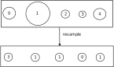

Assignment 5: The Concatenator (50 Points)
Chris Tralie
Background / Logistics
We saw in class that it is possible to use Nonnegative Matrix Factorization to decompose an audio clip into a set of K sonic source templates stored in an win_length x K matrix W, as well as a matrix of activations over time for each of these sources stored in a K x nwin matrix H so that the matrix multiplication WH approximates an absolute magnitude spectrogram V. The main application we focused on was "unmixing," or separating an audio track into its different instrument components. This is also sometimes referred to as the "cocktail party problem," since we're trying to filter out one sound from the superposition of many, just like one might try to focus on the speech coming from the person in front of them in the midst of a cacophony of sound at a cocktail party.
In addition to audio unmixing and learning musical instrument templates from audio, the mathematics that were developed for NMF can also be used to create a novel instrument for musical expression. In addition to being given a spectrogram V, we are also the W of templates, which remains fixed, and our job is only to learn H. In this way, we can think of the problem not as one of unmixing, but of learning how to activate a set of templates we're given to best match a target V. This is referred to as "musaicing" in this paper. The musaicing technique in that paper is referred to as the "Let It Bee" technique, and it earned its name by showing how using V as the spectrogram for a clip of Let It Be from The Beatles, and inputting W as the spectrogram of a bunch of bees buzzing
I followed up with this idea in a paper last year called "The Concatenator: A Bayesian Approach To Real Time Concatenative Musaicing", which is what you'll implement in this homework. This addressed the problem of Driedger's technique not being able to scale to corpora more than a few minutes long. It does this by running tons of tiny NMF problems in parallel and figuring out which ones work the best. Have a look also at the supplementary material for this paper, as well as my summary video below:
The algorithm is a bit complex, so we will only be implementing a vanilla version of it that won't be as fast as the real thing. Still, you will get a taste for all of the steps of the algorithm. In every step, I'll provide examples using buzzing bees as a corpus:
And The Beatles "Let It Be" as a target:
By the end of the assignment, you'll have a result similar to the following:
The most fun part of this assignment, though, should be when students choose their own corpus/target combinations for the musical statement.
Learning Objectives
- Practice numpy arrays, methods, and for loops in the service of musical applications
- Modify algorithms for nonnegative matrix factorization
- Programmatically promote temporal continuity in audio reconstructions using particle filters
- Compose music in a cutting edge style
Getting Starter / What To Submit
Click here to download the starter code for this assignment. You'll be editing musaic.py, and you can run tests in Tester.ipynb
When you are finished, submit musaic.py to canvas, as well as an audio file for your musical statement, and a description of your corpus and target. Finally, indicate a title for your musical statement, and name/pseudonym you'd like to use in the music gallery on our class web site, and indicate the names of any buddies you worked with.
Programming Tasks
Our end goal is to mix together the best p windows from the corpus at every moment in time to match the target. We're going to slowly build up in complexity, starting with a total corporal cacophony and ending with a result that matches the rhythmic aspects and pitch of the target better.
1. Mixing Random Activations (5 Points)
Your Task
Loop through all of the windows in the target of window length win. For each window, choose p random windows in the corpus. Mix in each window with a random weight (i.e. scale on the amplitude) between 0 and 1, and shift-overlap add them into the result using a hann window (you can use the hann_window method in utils.py that's already been imported). This is similar to the shift-overlap-add (SOLA) procedure you used in homework 3. The animation below depicts this process:
Below is an example of the kind of result you should expect to get with this approach using p=1 activations
Here's an example with p=5 activations
NOTE: We've completely ignored the audio in the target here, but we will start to incorporate it in the next step
2. KL-Weighted Activations (10 Points)
Even though we're using random activations, we can still adapt them more to the target than we currently are.
Your Task
Modify the code that you wrote in the last part to use weights based on the target instead of random weights. To do this, run KL-based NMF on the mel-spectrogram, with the W matrix fixed to mel spectrogram of the windows that you're using in the corpus at that moment in time, and the V matrix as a single column corresponding to the mel spectrogram of the current target window. Then, use the resulting entries in H as your weights for these corpus windows instead of the random weights from the last part. You can use get_mel_filterbank in utils.py to construct the mel-filterbank, using the number of mel_bands and the frequency fmax passed along to the musaic method. And you can use do_nmf_kl to perform NMF.
The image below shows a toy example pictorially:
Below is an example of the kind of result you should expect to get with this approach using p=1 activations
Here's an example with p=5 activations
Notice that although the activations are still random and we can't hear the notes of the target, we can make out the rhythm now somewhat.
3. Particles And Transition Probabilities (10 Points)
Now you're going to start implementing the "particle filter," which is the main probabilistic tool I used in my paper. In a nutshell, we're going to create tons of little "particles," each of which is a random sample of p windows in the corpus. Some of these particles will be a good fit for our target at this moment in time, and some of them won't. We'll get to figuring that out eventually, but for now, we're going to set them up in code and move them forward in time with some probability so that they agglomerate larger "grains" in the corpus.
Your Task
Modify your code to maintain n_particles different particles, each which tracks p windows in the corpus. Initialize each of them randomly. Then, in your loop that goes through each target window, compute the NMF weights for each particle. Once you've gone through each particle, use the weights for the particle that achieves the minimum KL fit (using get_kl_fit in utils.py) and mix together into the output just as you did in the last step.
Finally, modify each window for each particle based on the parameter pd, which is the probability that window will move forward in the corpus. For each window at index idx in the corpus:
- If you draw a random number in [0, 1] that's less than pd and the window starting at idx+hop is still in bounds in the corpus, change the window to be idx + hop
- Otherwise, jump the index to be a random offset in the corpus
Below is an example with p=5, 100 particles and pd = 0.5
Below is an example with p=5, 100 particles and pd = 0.99
Notice how for a longer pd, we hear the same bees droning on for longer. This is because it's more likely that corpus windows will continue to advance forward in time than to jump somewhere randomly.
4. KL-Based Particle Weights / Resampling (10 Points)
In this step, we're going to complete the particle filter by taking into consideration how well each particle fits the target coming in at each time. To improve performance, we'll implement a "survival of the fittest strategy" to cull particles that aren't working as well and replicate ones that are working better.
Your Task
Create an array w of "weights" that is parallel to the particles. Each element holds the "weight" of that particle. Assuming there are P particles, start each weight off as 1/P. Then, for each target window in your loop, implement weight updates with the following steps:
-
Let Fi be the KL fit of the
ithparticle. Given a temperature τ the "observation probability" pi of theithparticle as\[ p_i = \frac{ e^{-\tau F_i} }{ \sum_{j} e^{- \tau F_j} } \]
This is a variant of the so-called softmax function, which turns the KL fits into a probability mass function over the particles. Particles with better KL fits have higher probabilities.
-
Multiply each weight by pi. Then, normalize the weights to that they sum to 1; that is, compute the sum of the weights, and divide each weight by this sum. If the sum is less than
1e-40, reset the weights to all be 1/P -
One problem that can happen with the above scheme is that we have "particle depletion" where one particle dominates in weight and the rest are tiny, which causes the particle filter to be saturated with mostly bad estimates. To ameliorate this, we're going to do something called "stochastic universal sampling," which is a "survival of the fittest" strategy. First, compute the "number of effective particles" neff as:
\[ n_{\text{eff}} = \frac{1}{\sum_{i} w_i^2} \]
When all of the weights are the same, this is equal to the number of particles. If this number drops below 10% of number of particles, you should resample the particles. I've provided a method
stochastic_universal_sampleto help you with this. This method takes a list of weights and returns a list of indices of what the new particles should be. Some particles will be sampled with duplication, which is more likely if they have higher weights. Some particles will skipped, which is more likely if they have lower weights. Based on whatstochastic_universal_samplereturns, create a new list of particles, each with a weight of 1/P. The following pictures shows an example of how resampling 5 particles might work, where the size of each particle is proportional to its weight:Note how the larger weight particle got repeated a few times, while some of the lower weight particles got completely skipped.
Testing
This is an intermediate step to the final result, and we're not doing anything different to the sound yet, but you can count how often you resample to make sure you're on the right track. Generally, with a higher temperature, resampling occurs more often, because the particles that fit better get larger weights relative to the others and begin to dominate. Also, decreasing pd causes the particles to jump around more, so they also need to be resampled more often. Specifically for the bees example, I got the following:
With win = 1024, p = 5, temperature = 50, and number of particles = 100, then pd = 0.5 resamples a majority of the time, and pd = 0.95 resamples around half of the time.
With win = 1024, p = 5, temperature = 1, and number of particles = 100, then pd = 0.95 usually resamples less than 5% of the time, and pd = 0.5 even less than that.
5. Aggregate Top Activations / Do Final Fit (10 Points)
Now we're going to have all of the particles cast votes based on their weight to choose a final set of corpus windows to use. This will be a lot more robust than simply choosing the best fit particle like we did in step 3.
Your Task
Do the following steps to get the final mix at each target window:
-
Create an array
votesthat has an element for each possible window in the corpus, starting each value as 0. -
For each corpus index in each particle, add the weight of the particle to that corpus index in
votes. The effect will be that corpus windows that are fitting well across multiple particles will get a lot of high weight votes. -
Pick the corpus indices with top p weights, and use these as the final p windows for the mix at this time. Specifically, do exactly what you did in step 2 to use KL NMF to come up with your mixing weights for these corpus moments.
To find the corpus indices with the top weight,
np.argsort(or better yet, np.argpartition) will come in handy.
Typical Results
Below are some examples of results you should expect for a working implementation using the bees as a corpus and "Let It Be" as a target, with 100 particles, p=5, and a frequency range from 0 to 4000 with 100 mel bins:
pd = 0.5, temperature = 1 |
pd = 0.5, temperature = 50 |
pd = 0.95, temperature = 1 |
pd = 0.95, temperature = 50 |
Notice how a higher temperature gives a better fit to the target with the notes, and notice how a higher pd leads to bees that drone on for longer. Notice also how the results are all cleaner than they were in step 3 for similar parameters, since we're feeding information about fit back into the particle filter.
Cheatboxing
Below is one final example that Encanti (my co-author on the paper) calls "cheatboxing." If we use this beatboxing as a target:
and these "unison essential drum loops" as a corpus, with p=5, pd=0.95, and temperature=1, we get a result like this:
6. Musical Statement (5 Points)
Now that you've created the musaicing system, use it to create your own novel compositions! Come up with some sound sources and a target, and go to town. Be sure to tweak the parameters as necessary to get the best quality sounds. You may want to up the number of particles and number of mel bins to get the best results. You will probably also have to adjust pd and the temperature. If you're not happy with the fit to the target, move the temperature up. If it sounds like it's jumping around too much and you want longer "grains" (contiguous chunks of windows), move pd closer to 1.
My Official Open Source Release
If you're not happy with the results of your system on the idea you're trying out, feel free to use my official implementation for the best results. It's faster and it has a few more tricks to improve the audio quality.
Other Examples
If you're having an artistic block, have a look at the examples at the bottom of my supplementary material.